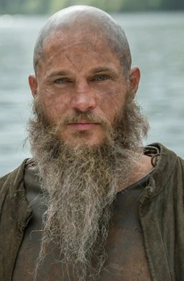
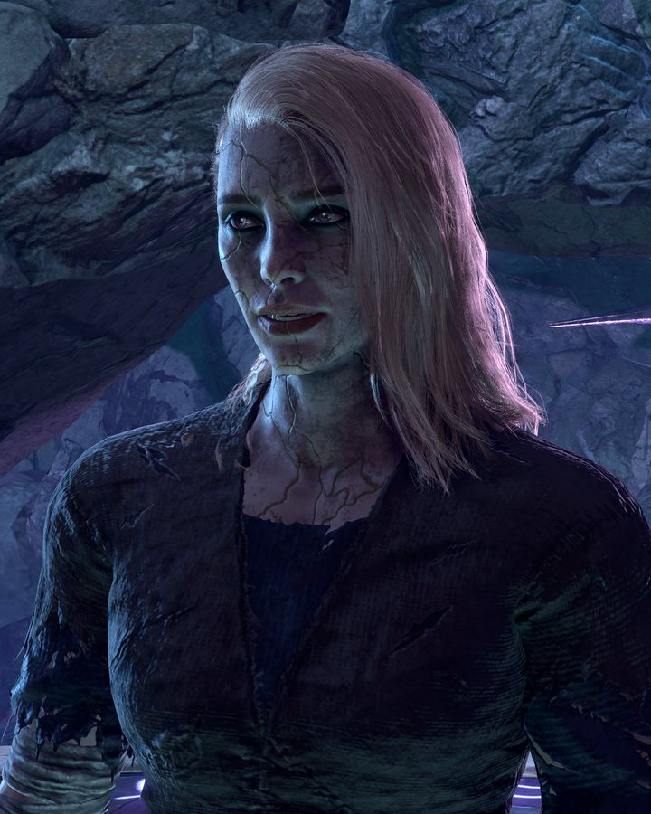
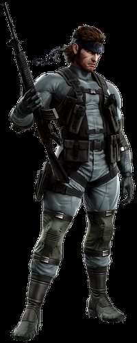
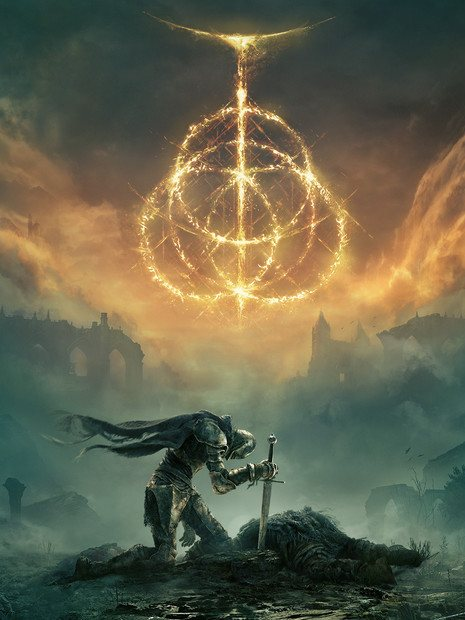

1
1
9.8Moosey rates
Seduce a vampire, interrogate a squirrel, beat a boss by shoving him off a ledge. Two hundred hours in and still finding things. The peak.
M.Games
9.8
Baldur's Gate 3
Larian Studios · 2023
Vol. IAutumn MMXXVIPrice: your time
A ledger of the records, films, series and games that earned their keep. Scores out of ten. Opinions out of line.

Frontispiece
Of all time, across every medium. Signed, sealed, and not up for appeal.
1
Seduce a vampire, interrogate a squirrel, beat a boss by shoving him off a ledge. Two hundred hours in and still finding things. The peak.
M.Larian Studios · 2023
 2
2
Released as pay-what-you-want, which was frankly an insult: it's worth a kidney. 'Reckoner' alone should be prescribed to anyone who thinks they've felt things.
M.Radiohead · 2007
 3
3
The most divisive film of the decade, and I'm on the correct side of the divide. A biblical fever dream in one house. People walked out. Their loss.
M.Darren Aronofsky · 2017
 4
4
McConaughey philosophising in a car for eight hours, and I'd happily have watched eighty. Time is a flat circle. So is my rewatch habit.
M.Season One · 2014
 5
5
Yes, the ending. I know. But the hundred hours before it are the finest farewell tour in gaming. Tuchanka still gets me. Shepard out.
M.BioWare · 2012
Chapter I
Ten records I'd drag out of a burning house, in the order I'd grab them.
1
Released as pay-what-you-want, which was frankly an insult: it's worth a kidney. 'Reckoner' alone should be prescribed to anyone who thinks they've felt things.
M.Radiohead · 2007
 2
2
Icelandic for 'thanks', and the only word on it I understood. Didn't matter. 'Hoppípolla' is what a glacier sounds like when it's happy.
M.Sigur Rós · 2005
Josh Homme nearly died on an operating table and came back with this, which seems a fair trade. Wounded, swaggering, and far sexier than desert rock has any right to be.
M.Queens of the Stone Age · 2013
 4
4
IDLES stop shouting long enough to say something devastating, then go back to shouting. A car crash of an album, literally and as a compliment.
M.IDLES · 2021
 5
5
Bass lines so smooth they need a lifeguard. The audio equivalent of a linen shirt on a warm evening. 'Pelota' is compulsory.
M.Khruangbin · 2020
 6
6
Leeds art-rock that won the Mercury and deserved it. Wry, wonky and cleverer than you, but it buys the next round so you let it off.
M.English Teacher · 2024
 7
7
Bristol jazz that's been left out in the rain and come back stranger. Saxophone drifting through fog. Put it on at 1am and let it do the rest.
M.Ishmael Ensemble · 2021
 8
8
My Morning Jacket's frontman goes full cosmic soul and quietly leaves orbit. Lush, political, unhurried. Best heard horizontal.
M.Jim James · 2016
 9
9
They retreated to a Welsh cottage with no electricity and came back plugged in anyway. 'Immigrant Song' is half Viking war cry, half air-raid siren. All hair.
M.Led Zeppelin · 1970
 10
10
A man exorcising every demon he owns through a fuzz pedal. Raw, slightly unhinged, and with choruses you'll hum in the shower against your will.
M.Strand of Oaks · 2014
Songs for the DeafA road trip through hell with Dave Grohl on drums. Mind the radio.Axis: Bold as LoveHendrix making a guitar do things guitars aren't licensed to do.So Long ForeverPalace. Heartbreak with excellent reverb.What Kinda MusicTom Misch and Yussef Dayes. Two lads, one groove, infinite head nods.Maggot BrainTen minutes of Eddie Hazel's guitar weeping. You will too.
Chapter II
Ten films worth the popcorn, the overpriced seat and the bloke on his phone in row F.
1
The most divisive film of the decade, and I'm on the correct side of the divide. A biblical fever dream in one house. People walked out. Their loss.
M.Darren Aronofsky · 2017
 2
2
Frances McDormand with a grudge and a lot of plywood. Furious, filthy and very funny, right up until it very much isn't.
M.Martin McDonagh · 2017
 3
3
Understood about forty per cent of it, enjoyed all of it. The film's own advice applies: don't try to understand it. Feel it.
M.Christopher Nolan · 2020
 4
4
Every action film since has been paying rent to this one. Leather coats, bullet time, and the red pill before the internet ruined it.
M.The Wachowskis · 1999
 5
5
A dad, a wormhole and a bookshelf, scored on an organ the size of a cathedral. The docking scene did things to my blood pressure that my GP should know about.
M.Christopher Nolan · 2014
 6
6
Every frame is a painting. Roger Deakins should be legally required to light everything. Slow as a glacier and twice as beautiful.
M.Denis Villeneuve · 2017
 7
7
Two and a half hours of rain, dread and Jake Gyllenhaal blinking. Hugh Jackman has never been angrier and I have never been more stressed.
M.Denis Villeneuve · 2013
 8
8
Gosling says about nine words, wears a scorpion jacket, plays Kavinsky. Then the lift scene. Cooler than you and fully aware of it.
M.Nicolas Winding Refn · 2011
 9
9
Ledger's Joker is the only agent of chaos whose logic is airtight. Not really a superhero film. A crime epic that happens to own a cape.
M.Christopher Nolan · 2008
 10
10
Starts as a cheeky comedy, ends somewhere in the basement of your soul. You will never look at a peach the same way again.
M.Bong Joon-ho · 2019
No Country for Old MenBardem's haircut is the scariest thing in it, and it has a cattle gun.FargoYah, a masterpiece, you betcha.OppenheimerThree hours of men in hats talking, and somehow a thriller.Saving Private RyanThe first twenty minutes deserve their own medal.The Place Beyond the PinesGosling on a motorbike, and a generation paying for it.The Hateful EightEight liars, one cabin, a great deal of stew.Gangs of New YorkDay-Lewis in a butcher's apron, eating the film whole.Forrest GumpLife is like a box of chocolates. This one's the good one.The Two TowersHelm's Deep. That's the review.The Shawshank RedemptionHope is a good thing. So is this.
Chapter III
Ten reasons I have never once gone to bed at a sensible hour.
1
McConaughey philosophising in a car for eight hours, and I'd happily have watched eighty. Time is a flat circle. So is my rewatch habit.
M.Season One · 2014
 2
2
A chemistry teacher becomes the worst man in New Mexico and you cheer him on. Says more about you than him, frankly.
M.Vince Gilligan · 2008
 3
3
Five episodes of quiet, radioactive dread. Not great, not terrible. Actually, it's flawless.
M.Craig Mazin · 2019
 4
4
Billy Bob Thornton as a wolf in a parka. Minnesota nice, Minnesota murderous. The Coens' world, somehow improved.
M.Season One · 2014
 5
5
Ragnar with a smirk and an axe, sailing west because why not. Seasons one to four are a proper saga. We don't talk about after.
M.Michael Hirst · 2013
 6
6
Easy Company, from Normandy to the Eagle's Nest, and a lump in your throat the whole way. The real veterans' interviews finish you off.
M.HBO · 2001
 7
7
Horrible people, superb insults, four seasons of a family failing upwards. Kendall deserved better. Actually, no, he didn't.
M.Jesse Armstrong · 2018
 8
8
Office work, but you split your brain in half to survive it. Relatable. Also the most stylish corporate horror on telly.
M.Dan Erickson · 2022
 9
9
Yes, the British one came first. Yes, I've picked the American one. Michael Scott is a tragic genius and I won't be taking questions.
M.American edition · 2005
 10
10
Seasons one to four are some of the best telly ever made. Season eight happened. The average lands here, bruised but proud.
M.HBO · 2011
Peaky BlindersBy order of the Peaky Blinders, this gets a mention.Parks and RecreationRon Swanson is a lifestyle. Breakfast food forever.The Last DanceJordan took everything personally, and that's the whole documentary.
Chapter IV
Ten games that cost me sleep, friendships, and roughly a year of my life. No regrets.
1
Seduce a vampire, interrogate a squirrel, beat a boss by shoving him off a ledge. Two hundred hours in and still finding things. The peak.
M.Larian Studios · 2023
2
Yes, the ending. I know. But the hundred hours before it are the finest farewell tour in gaming. Tuchanka still gets me. Shepard out.
M.BioWare · 2012
 3
3
Kratos becomes a dad, which turns out to be scarier than any god. One unbroken shot, an axe that comes when called. BOY.
M.Santa Monica Studio · 2018
 4
4
Robot dinosaurs versus a bow and arrow: the premise of a ten-year-old, the story of a philosopher. Aloy deserves a statue.
M.Guerrilla Games · 2017
 5
5
Old Snake, nanomachines, and cutscenes long enough to do your tax return during. A glorious, unhinged farewell. Kojima-san, you madman.
M.Kojima Productions · 2008
 6
6
You will die. A lot. Then you'll spot a castle on the horizon and ride straight at it anyway. Try finger, but hole.
M.FromSoftware · 2022
 7
7
Press X to Jason. Ignore the memes: a properly tense noir that made button prompts feel like life or death.
M.Quantic Dream · 2010
 8
8
Androids, choices, and a flowchart that silently judges you after every chapter. Never felt so guilty about a branching path.
M.Quantic Dream · 2018
 9
9
The golden age of lobbies, killstreaks and twelve-year-olds questioning my parentage. Ghost wore the balaclava best.
M.Infinity Ward · 2009
 10
10
Gothic Victorian horror where the cure is worse than the disease and the bosses worse than both. Still waiting on that 60fps patch. Still.
M.FromSoftware · 2015
Destiny, co-opThe loot's mediocre. Raiding with mates is sacred.SkyrimYou've played it. I've played it. My fridge has played it.Dark Souls IIIPraise the sun, then die to the Nameless King.Bad Company 2Buildings that fall down when you shoot them. Revolutionary.LittleBigPlanetSackboy. Need I say more.Metal Gear Solid VUnfinished, and still the best stealth sandbox ever made.Modern Warfare (2019)The lighting alone deserves an award.Ghost of TsushimaFollow the wind. Every standoff is pure Kurosawa.Red Dead Redemption 2Arthur Morgan deserved better. So did my horse.
Chapter V
Five people who don't exist and whom I'd follow into a war anyway.
 1
1
Seven-odd feet of Obsidian warrior with the soul of a poet. Every chapter he's in is a better chapter. Hail Reaper, but hail Ragnar louder.
M.Red Rising

2Farmer, raider, king, and chaos gremlin with a smirk. The head tilt alone is a masterclass in acting.
M.Vikings

3Daughter of the moon, locked up for a century, comes out swinging. Pure knight-errant energy. Isobel, you lucky thing.
M.Baldur's Gate 3

4Bandana, cardboard box, a voice like a gravel driveway. The original tactical espionage action hero. Kept you waiting, huh?
M.Metal Gear

5Silent, maidenless, endlessly dying and endlessly getting back up. The most honest self-insert in gaming.
M.Elden Ring